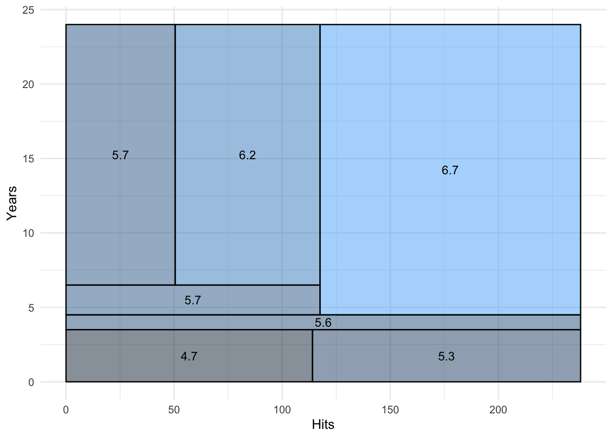
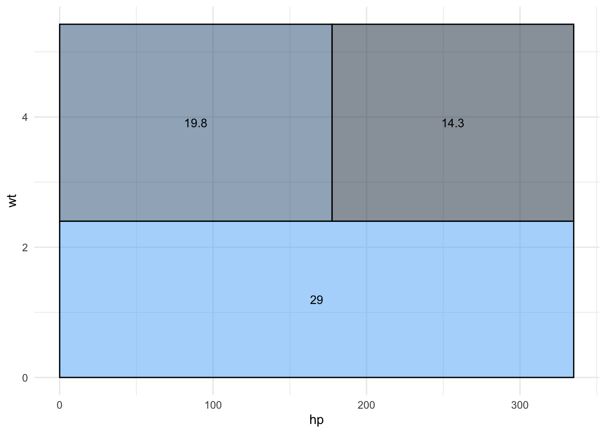
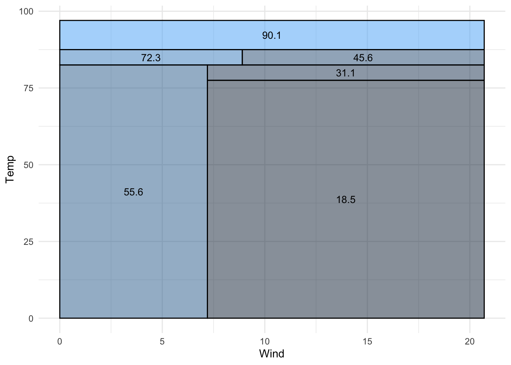
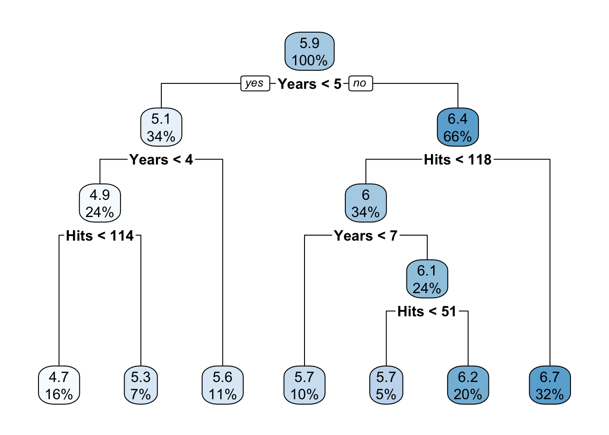
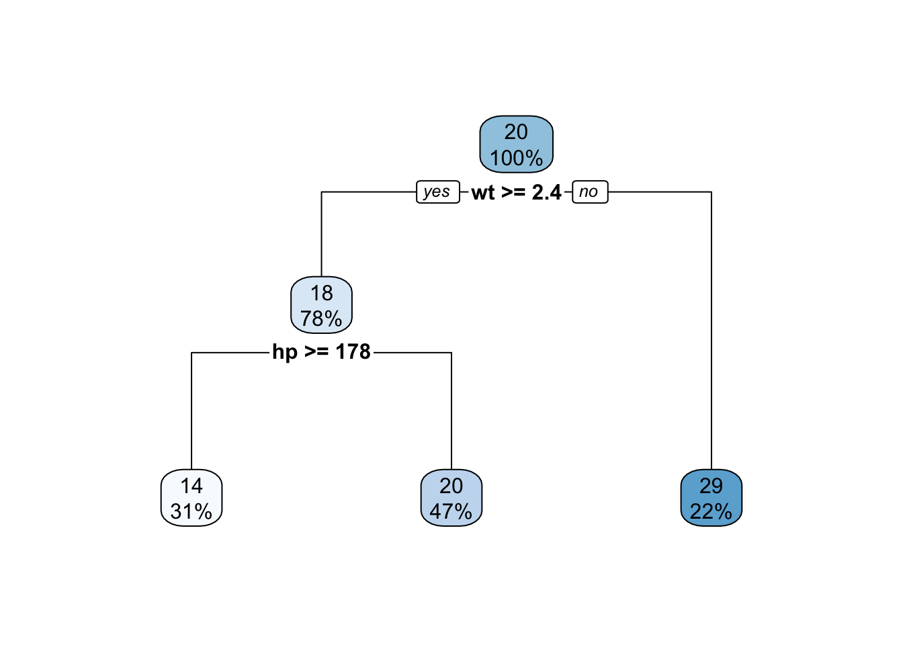
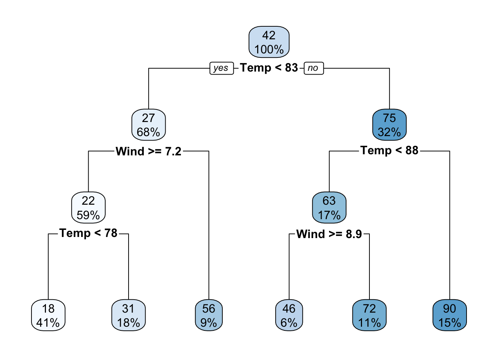
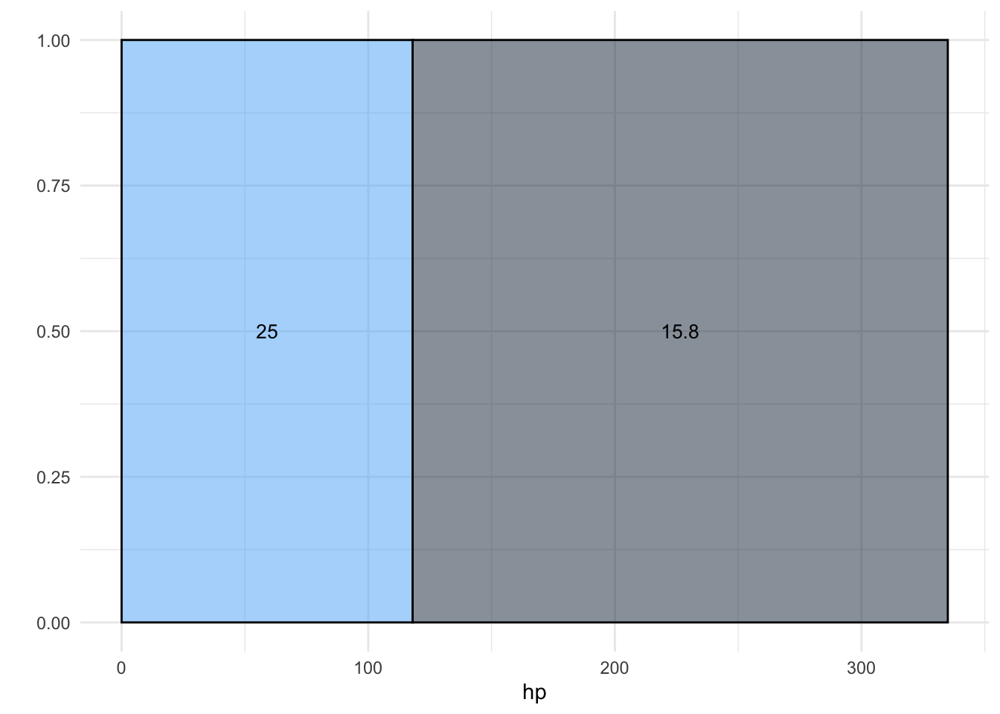

Code
library(ISLR2)
library(rpart)
library(tidyverse)── Attaching core tidyverse packages ──────────────────────── tidyverse 2.0.0 ──
✔ dplyr 1.1.4 ✔ readr 2.1.5
✔ forcats 1.0.0 ✔ stringr 1.5.1
✔ ggplot2 3.5.1 ✔ tibble 3.2.1
✔ lubridate 1.9.4 ✔ tidyr 1.3.1
✔ purrr 1.0.2
── Conflicts ────────────────────────────────────────── tidyverse_conflicts() ──
✖ dplyr::filter() masks stats::filter()
✖ dplyr::lag() masks stats::lag()
ℹ Use the conflicted package (<http://conflicted.r-lib.org/>) to force all conflicts to become errorsCode
library(rpart.plot)
Hitters <- Hitters |>
filter(!is.na(Salary)) |>
mutate(Logsal = log(Salary))
Hitters |> select(Years, Hits, Division, AtBat, Logsal) |>
head(15) Years Hits Division AtBat Logsal
-Alan Ashby 14 81 W 315 6.163315
-Alvin Davis 3 130 W 479 6.173786
-Andre Dawson 11 141 E 496 6.214608
-Andres Galarraga 2 87 E 321 4.516339
-Alfredo Griffin 11 169 W 594 6.620073
-Al Newman 2 37 E 185 4.248495
-Argenis Salazar 3 73 W 298 4.605170
-Andres Thomas 2 81 W 323 4.317488
-Andre Thornton 13 92 E 401 7.003065
-Alan Trammell 10 159 E 574 6.248319
-Alex Trevino 9 53 W 202 6.239301
-Andy VanSlyke 4 113 E 418 6.309918
-Alan Wiggins 6 60 E 239 6.551080
-Bill Almon 13 43 E 196 5.480639
-Buddy Bell 15 158 W 568 6.652863Code
data(mtcars)
data(airquality)
mod1 <- rpart(Logsal ~ Hits + Years, data = Hitters, cp = 0.01)
mod2 <- rpart(mpg ~ hp + wt, data = mtcars, cp = 0.01)
mod3 <- rpart(Ozone ~ Wind + Temp, data = airquality, cp = 0.01)
alt_viz <- function(mod, type = 1) {
names <- unique(mod$frame$var)
names <- names[names != "<leaf>"]
if (length(names) == 1) {
xname <- names[1]
yname <- NULL
} else {
yname <- names[1]
xname <- names[2]
}
modelname <- mod$call$data
leaf <- rownames(mod$frame[mod$frame$var == "<leaf>", ])
paths <- path.rpart(mod, nodes = leaf, print.it = FALSE)
get_bounds <- function(conditions) {
data <- get(modelname)
xvals <- data[[xname]]
if (!is.null(yname)) {
yvals <- data[[yname]]
} else {
yvals <- rep(1, length(xvals))
}
x_min <- ifelse(min(xvals) >= 0, 0, min(xvals)) ; x_max <- max(xvals)
y_min <- ifelse(min(yvals) >= 0, 0, min(yvals)) ; y_max <- max(yvals)
for (i in conditions) {
i <- gsub(" ", "", i)
if (grepl(paste0("^", xname, "<"), i)) x_max <- round(min(x_max, as.numeric(sub(paste0(xname, "<"), "", i))), 1)
if (grepl(paste0("^", xname, ">="), i)) x_min <- round(max(x_min, as.numeric(sub(paste0(xname, ">="), "", i))), 1)
if (!is.null(yname)) {
if (grepl(paste0("^", yname, "<"), i)) y_max <- round(min(y_max, as.numeric(sub(paste0(yname, "<"), "", i))), 1)
if (grepl(paste0("^", yname, ">="), i)) y_min <- round(max(y_min, as.numeric(sub(paste0(yname, ">="), "", i))), 1)
}
}
return(c(x_min, x_max, y_min, y_max))
}
bounds_list <- lapply(paths, get_bounds)
bounds_df <- as.data.frame(do.call(rbind, bounds_list))
colnames(bounds_df) <- c("xmin", "xmax", "ymin", "ymax")
leaf_preds <- mod$frame[mod$frame$var == "<leaf>", "yval"]
regions <- bounds_df |> mutate(pred = round(leaf_preds, 1)) |> tibble()
plot <- ggplot(regions) +
geom_rect(aes(xmin = xmin, xmax = xmax, ymin = ymin, ymax = ymax, fill = pred), color = "black", alpha = 0.5) +
geom_text(aes(x = (xmin + xmax)/2, y = (ymin + ymax)/2, label = pred), size = 3.5) +
labs(x = xname, y = ifelse(is.null(yname), "", yname)) +
theme_minimal() +
theme(legend.position = "none")
if (type == 1) {
print(plot)
} else if (type == 2) {
print(regions)
} else if (type == 3) {
print(plot); print(regions)
} else {
stop("Invalid `type` argument. Must be 1 (plot), 2 (data), or 3 (both).")
}
}
alt_viz(mod1)
Code
alt_viz(mod2)
Code
alt_viz(mod3)
Code
rpart.plot(mod1)
Code
rpart.plot(mod2)
Code
rpart.plot(mod3)
Code
# what to do when we have a binary variable
# alt_viz(rpart(Logsal ~ Hits + Division, data = Hitters, cp = 0.01))
# what to do when we have more than 2 variables
# alt_viz(rpart(Ozone ~ Wind + Temp + Solar.R, data = airquality, cp = 0.01))
# what to do when only one variable is important for splits
alt_viz(rpart(mpg ~ hp + qsec, data = mtcars, cp = 0.01))